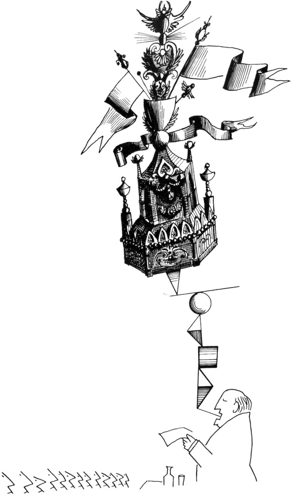

本图来源于《魔幻迷宫》1960年。
Saul Steinberg，Untitled drawing，ink on paper.
Published in Steinberg，The Labyrinth，1960.
©The Saul Steinberg Foundation/Artists Rights Society（ARS），New York
每天都有数百人试图向你推销产品、旅行或想法；说服你承认他们是对的；说服你按他们的方式去投票；让你对一些不公正感到愤怒；让你对一些外部危险感到恐惧；引诱或者诱导你去做他们想做的事情。每天你都会收到成千上万的广告，你无法逃脱、应接不暇，几乎喘不过气来。广告打断了你在网上的阅读；会出现在网站的空白处；每次购买都会面对广告；在大多数电视节目之前都会插播广告；在每个加油站、自动取款机和公共汽车长凳上都张贴着广告。
现代生活的所有快速变化中，没有什么能够比得上技术的快速发展，我们利用技术的发展来改变娱乐自己、交流和影响他人的方式，他人通过技术发展的成果如电视、电脑、智能手机屏幕和其他媒体来改变影响我们的方式。因此，本章将首先介绍大众传播的现状及其对消费者的影响。然后我们将集中讨论说服，当一个人的传播改变了另一个人的意见、态度或行为时，说服便会发生。
说服一个人有多容易？答案在一定程度上取决于我们所要面对的是人们的看法还是态度。看法指的是一个人认为是真的：我的看法是吃蔬菜对我有好处，系安全带可以减少交通事故，每天服用维生素很重要。这些看法主要是认知的；也就是说，它们发生在头脑中而不是情感深处。它们是短暂的；它们可以通过很好的证据来加以改变。因此，假如我收到一份对某项研究极好的综述，表明复合维生素补充剂充其量是无用的，至少不会导致对身体的伤害（就像实际情况一样1），我很可能会改变对这个问题的看法。
但是假设一个人认为素食是不健康、不环保的，或者要求系安全带是对司机自由的非法侵害，或者维生素挽救了他朋友的生命。这些“看法”不再是纯粹的认知。几乎可以肯定的是，其中包含了强烈的情感，以及对主体好坏的评价。包含情感和评价成分的观点被称为态度。与看法相比，态度是极难改变的——正如我们在讨论称为偏见的复杂态度时所看到的。当你阅读本章中关于影响策略的讨论时，你可能会记住看法和态度之间的区别。对某个人而言容易改变的看法，对另一个人则可能是根深蒂固的态度。
我们已经看到人们对社会影响会有多么敏感，但在这里，我们将探讨这种敏感是如何取决于针对我们的特定策略的，探讨使我们更有可能说“是”的社会心理诱发因素。然而，有时我们也会拼命地抵制说服，比如当我们试图利用事实来改变孩子睡眠时的想法，或者改变朋友对政治的看法。我们是如何说服的？为什么我们有时会接受说服，有时却不会接受呢？
现代媒体场景的影响
技术给我们所做的几乎所有事情甚至我们走路的方式，带来了令人难以置信的改变。仅仅在十年之前，我们如同我们的祖先一样在世界上行走了几千年：直立着，眼睛审视着周围的环境，寻找潜在的危险或机遇，或者只是为了欣赏风景。然后，在2007年，iPhone出现了，世界各地的人们突然开始边走边盯着他们的智能手机屏幕，做着从看动画片到举行商务会议的任何事情。我为它所带来的难以想象的变化而感到震惊，事实上，这些计算机就装在我们的口袋里面，但却比美国国家航空航天局用来送宇航员上月球的、堪比房间大小的庞然大物，具备更为强大的计算能力和功能。
我们的手机可以用来做任何事情：获取不断更新的新闻；写作；查阅我们的日历；获取方位；做研究；预订餐厅、航空旅行和酒店房间；购物；或者迅速在Spotify[1]、Netflix[2]或YouTube[3]上选择无限多的娱乐选项。这种多功能性只是部分解释了为什么大多数拥有智能手机的人在醒着的时候会有超过25%的时间眼睛盯着屏幕。大部分时间，他们都在与他人交流，2每天评估数百位潜在的浪漫伴侣，或者阅读几乎所有人的最新想法——我们的朋友、教授、最喜爱的音乐家，甚至是美国总统——并回复他们。我们可以在自己的社交网络上评论和分享任何视频、照片或音乐。在允许发表评论的网站上，我们可以通过与朋友交谈、争论、安慰和庆祝来娱乐自己。我们可以一天24小时不停顿地骚扰、搜索或者对完全陌生的人作出判断。
因为这些进步从根本上改变了我们如何处理自己生活的事务，许多人担心我们沉浸在媒体之中会影响到我们的社会交往和幸福感。技术在某些情况下改善了社会关系，在其他情况下则恶化了社会关系。例如，直到不久前，假如你是一位非洲裔美国人，去打出租车通常仍然会成为一种令人沮丧的经历。由于担心麻烦，出租车司机往往不会停下来接一位黑皮肤的男人。然后，Uber出现了，这是一个应用程序，它可以确保任何拥有信用卡和智能手机的人在任何地方、任何时间让司机来接他们。然而，对于应用程序为我们每一个人可能提供的福利，手机技术已经催生了一些令人遗憾的人类趋向，如网络暴力、用手机发送色情短信或图片、非法跟踪。3
分心 数以百万计的人对他们的智能手机上瘾，就像任何一种毒品一样，这种智能手机产生了无限的刺激欲望。智能手机的运行方式与自动投币售货机非常相似，它以警报、新闻、推特和文本的形式提供间歇的奖励，所有这些都会让人们不间断地查看下一次的社交网络活动。4给予我们iPhone和iPad的史蒂夫·乔布斯拒绝将这些设备送给他自己的孩子，因为他清楚这些设备具有让人上瘾的特性。一位观察家指出：“似乎生产高科技产品的人都遵循了毒品交易的基本原则：永远不要仅靠个人的供应来获得高收益。”5由于我们不间断地、有时是强迫性地关注着我们的手机，我们的注意力被周围的环境、我们周围的人以及我们正在努力完成的任务分散了。手机上瘾在青少年中发生率最高，这与精神消沉和学校表现较差有关。6如果这还不够糟糕，智能手机上瘾也会伤害无辜的旁观者：超过30%的成年人和40%的青少年承认在开车时发短信，这会明显增加驾驶事故，加大出现致命车祸的风险。7
即使我们不沉湎于我们的手机，我们对手机的依赖也意味着它们的存在经常会影响我们的注意力。在比尔·桑顿（Bill Thornton）8所做的一项实验中，大学生们参加了由一系列困难或容易的认知任务组成的测试。这些考生中有一半被要求在测试期间远离手机；其他人则被要求将手机放在桌子旁边，以便回答即将进行的关于手机功能的测查。尽管没有人对这些简单的问题提出异议，但那些参加测试时可以看到手机的学生在这些困难的问题上的表现，比那些把手机放置在看不见地方的学生差20%。
另一类似的实验表明，这类分心也会破坏我们面对面的交流。9让陌生人互相介绍，轮流谈论他们最近生活中有趣而有意义的事件，从而熟悉彼此。在一种情况下，实验者把手机放在他们旁边的桌子上；在另一种情况下，实验者把笔记本放在同一个地方。谈话结束后，被试对他们的互动和同伴进行了评分。与先前的研究一样，手机具有破坏性；当它出现在房间里时，人们认为他们的同伴不太容易沟通且值得信赖，并且认为花更多的时间在一起也不太可能成为朋友。其他类似的研究发现，在社交互动过程中使用手机会减少眼神交流、参与度、对同伴的同理心关怀以及谈话的乐趣。10
社交技能缺乏
美国人平均每天要花10个小时盯着屏幕看：5个小时在看电视，5个小时用于智能手机。11这意味着美国儿童平均每天花在电子媒体上的时间比花在与父母交流和花在学校的时间多。你可能听过你的父母和老师这样说过：“在我小时候，我们互相交谈，讲故事，编游戏，在外面跑来跑去。今天，生日聚会只是一群孩子在同一个房间里，围坐在一起吃蛋糕，看手机。我很担心这会对他们的社交技能造成什么影响。”
他们的担心有道理吗？这是显而易见的。雅尔达·乌尔斯（Yalda Uhls）和她的同事12测量了学龄儿童的社交能力，对来自同一所学校的类似学生进行了测试，这些学生平均每天通过手机使用媒体所花费的时间为4.5小时。首先，对所有学生的社交能力进行测试。具体来说，实验者向他们展示了表达不同情绪（恐惧、愤怒、悲伤、幸福）的面部图片，并被要求识别每个图片中的人所体验到的情绪。然后，一半的学生被送到一个为期五天的夏令营，那里不允许使用手机或其他设备。其余的人带着他们的电子设备待在家里。五天后，所有的孩子都再次接受了测试，结果显示五天内没有手机的孩子的社会智力有了显著的提高。虽然电子产品（包括电子游戏）可以成为强大的学习工具，13似乎没有什么比好的面对面交流学习阅读和与他人互动更好。除了剥夺我们发展社交技能的机会外，深入社交网站还可以促使人们变得更加自我中心和自恋，并相信名声、财富、人气比友谊、慷慨、社区更重要。14
当然，这并非全部。显然，我们沉浸在数字世界中有利有弊。要记住，几乎每一种新的媒体形式都会对年轻人心灵产生令人担忧的影响，这是颇具启发性的。苏格拉底哀叹书籍的发明，他说这将促使人们“健忘”。当漫画书在20世纪30年代被引进时，父母被警告说漫画会将他们的孩子变成少年犯（不像那些被认为对年轻人有益的好书）。广播、电视、电脑、短信、谷歌和PowerPoint——都被指责让我们变得懒惰、不那么聪明、缩短了注意力广度、破坏了我们的社会生活。15然而，我们的认知能力在电视、漫画书和其他技术迅速发展的几十年里得到了蓬勃发展，青少年的犯罪率却在下降。16技术将继续迅猛发展，并改变我们的生活方式，最好的反应不是哀叹这一事实，而是学会明智和适度地利用我们的技术设备。研究已经证实了，在学习或工作时关闭电子邮件和Twitter、在桌上没有电话的情况下进行面对面的交谈、在大自然中散步、仰望天空和树木，都能够给人们带来心理上和情感上的益处。17
除了使用媒体的数量，人们使用媒体的方式也会有所不同。把自己沉浸在社交媒体中会提升还是会让我们沮丧的一个关键决定因素是，我们如何去积极参与。你是否被动地去看别人的资料，在没有交流的情况下滚动浏览？或者你是否会评论和发布你个人的新闻和图片？更为被动的使用方式，意味着最有可能让我们感到沮丧，感到被忽略和痛苦：我们的生活似乎不如我们朋友的生活更令人兴奋。为了更好地享受社交媒体，我们需要对他人做出回应；就像在现实生活中一样，我们需要参与其中。通过我们在线时的积极参与，以及对我们所使用的操作终端可能上瘾保持警觉和超然，我们可以获得巨大的好处和乐趣，而不会挤出或分散我们对宝贵的离线体验的注意力。18
说服
我们不仅生活在一个大众传播的时代，而且生活在一个以尝试说服大众为特征的时代。无论我们身在何处，都有人试图教育我们：说服我们购买产品或为某项事业捐款；或者说服我们投票给某位候选人；或者赞成某些正确、真实或美丽的东西。这一点在广告中最为明显。几乎任何相同产品（例如阿司匹林、牙膏或洗涤剂）的制造商，都会花费大量的金钱来说服我们购买他们所包装的产品。
但是，通过大众媒体施加影响不必像广告那样大张旗鼓。让我们来看看那些自称是客观的东西：网络新闻。新闻播音员想卖给我们什么吗？除了极少数例外，绝无可能。但是那些制作电视新闻的人，仅仅通过确定哪些事件被曝光以及曝光多少，便可以对我们的观点施加强大的影响。哪些因素决定了他们的选择？最主要的是对观众的吸引。新闻是一种娱乐形式。当负责新闻节目的人从每天发生在当地、国家和国际层面的成千上万条新闻中确定要报道哪些新闻事件、然后向公众展示哪些新闻事件时，他们在很大程度上也就决定了这些材料的娱乐价值。观看被洪水淹没的城市（汽车被冲走，人们漂浮在倒下的树上）的画面，比观看人们在建造防洪堤更有吸引力。观看一个建设项目几乎没有那么激动人心，然而一个城市修建堤坝的决策可能是更为重要的新闻。
正如足球比赛等活动在电视上比象棋比赛等安静的活动更有趣一样，骚乱、爆炸、地震、大屠杀和其他暴力行为比有关防止暴力行为的报道，更有可能获得更多的播报时间。因此，新闻广播往往侧重于恐怖分子、杀人犯、抗议者、罢工者、警察或失控名人的暴力或破坏性行为，因为与描绘人们以和平、有序的方式行事相比，这类行为更能吸引人们观看。19此外，最暴力的新闻通常最早在广播中报道，尤其是在当地的新闻节目中。这样便产生了一种信息，即暴力新闻是一天中最重要的新闻。正如记者所言，“如果新闻的内容充满了血腥，那么这则新闻总是会出现在头版，引起人们注意”。这样的报道，显然呈现出一幅扭曲了的世界画面。
在试图取悦我们的过程中，新闻媒体无意中让我们相信，现在人们的行为比以往任何时候都更加暴力。正如我们在第2章讨论易得性便捷判断时所看到的，人们通过容易想到的方式来估计事件的频率。当媒体用有关犯罪和恐怖主义的坏消息来吸引观众时，人们会高估暴力和灾难的发生率。这种偏见既反映又加强了我们对各类威胁的关注，即“坏大于好”现象的发展趋势。难怪在盖洛普民意测验中，60%的被调查者说他们相信犯罪和谋杀在美国呈上升趋势。而事实上，二十五年来，所有类型的犯罪率都在稳步下降。20这种错误的看法可能会使人们对社会状况进行误判，并可能最终影响他们的投票方式、他们对其他群体和其他国家的态度以及他们访问主要城市中心的愿望。（一位爱达荷州乡村小镇的居民对一位来访的纽约人说：“我为什么要去纽约？那里到处都是帮派在互相残杀。”）
当然，有些暴力事件确实有必要广泛报道。在2001年9月11日的恐怖袭击发生之后，大多数美国人坐在电视机前，因为他们想知道发生了什么，他们需要确认情况已经得到了控制。他们成百次观看双子塔的倒塌，因为新闻频道全天候报道了这一事件。我们怎样才能确定公民希望看到的是什么？在袭击发生后的两周内，关注美国有线电视新闻网（CNN）的人数增加了667％。9月12日，《纽约时报》的销售量比9月10日多出了25万份。21
获取信息是一件好事，媒体在让我们了解情况方面发挥着至关重要的作用。然而，这种媒体曝光也可能存在不利因素。无论是有意还是无意，这种栩栩如生的画面塑造了人们的态度和意见。坍塌的双子塔画面反复播出，以及在新闻频道里重复出现的好战口号（“反恐战争”、“美国受到攻击”、“美国反击”），激发了观众强烈的情绪，因此减少了关于美国应如何回应的任何真正辩论的可能性。相反，宣布对伊拉克（一个与双子塔被破坏毫无干系的国家）战争的提议在国会表决时几乎没有遇到任何反对的杂音，这恰恰是后来被大多数美国人认为是一场可怕的、失误的战争。22
这是一本社会心理学著作，而非政治学论著。我的建议是，在一个民主国家里，类似是否参战之类的重大决策应当付诸理性的公开辩论。强烈的情绪，例如新闻媒体唤起的情绪，常常会妨碍理性的决策。正如阿道夫·希特勒的高级助手之一赫尔曼·戈林（Hermann Goering）在纽伦堡被判处死刑之前所说的那样：“人们总是被教导要听从领袖们的命令……你必须做的只是告诉人们，他们正面临着攻击，而去指责那些主张和解的人缺乏爱国心并可能会将国家置于危险之中。在任何一个国家这一招都会奏效。”23
媒体感染 媒体也通过一种称为情绪感染的现象发挥其力量，这种现象发生在一个人的情绪行为引发观察者的类似情绪和行为之时。当你去药店购买任何类型的药丸时，瓶子上都会有一个安全帽。想知道为什么吗？在1982年秋天，芝加哥地区有7人在服用含有氰化物的强效泰诺胶囊后死亡。这个事件，既悲惨又离奇，被广泛宣传。即使在互联网时代之前，这个故事也传播到了每一个角落。只要打开电视或收音机，或者翻开报纸，人们便会看到有关泰诺中毒事件的消息。这一突出报道的影响是立竿见影的：据报道，全美各城市都出现了类似的中毒事件，包括漱口水、眼药水、喷鼻剂、汽水，甚至是热狗。这些故事被戏剧性地称为“模仿中毒”，反过来这些故事引起了媒体的广泛关注，创造了更多故事。许多人惊慌失措，寻求烧伤和中毒的医疗援助，而实际上他们所患上的只是普通皮疹、喉咙痛、胃痛。误报人数是实际受到物品毒害人数的7倍。24由于这些事件发生在万圣节之前[4]，数十个社区的官员们担心许多人可能通过污染儿童糖果来模仿谋杀。
最初发生在芝加哥的投毒事件几乎可以肯定是出自一人之手，只不过他从未被发现或抓获。但有人认为，在某家新闻机构的言论中，25投毒的风潮形成了“一场无法治愈的传染病”。这本身就是一个“病态”社会和一个国家走向“疯狂”的症状。许多报纸发现自身处于一种颇具讽刺性的境地：从最初耸人听闻地报道投毒事件，到后来极力渲染专家们对这类宣传所导致的灾难性后果而提出的批评。
几年后，新泽西州的四个青少年签订了自杀协议，然后实施了他们的计划。在这起多重自杀事件发生后的一周内，美国中西部的两名青少年在类似的情况下被发现死亡。媒体报道强调了青少年自杀的困惑和悲伤，其中有很多关于自杀事件的专题报道，这些铺天盖地的报道导致了一些脆弱、抑郁的青少年认为自杀是解决他们自己不快乐的方法。社会学家戴维·菲利普斯（David Philips）和他的同事26通过比较报道前的自杀率和报道后的自杀率来跟踪青少年自杀率的波动：主要电视网对自杀的报道越多，随后青少年自杀率的增加幅度就越大。当一个名人自杀时，自杀率尤其可能飙升，这既因为他们的例子引起了更多的公众关注，也因为他们是更强有力的影响因素。当抑郁的人得知某个名人已经放弃了自己的生命——像玛丽莲·梦露（Marilyn Monroe）、库尔特·柯本（Kurt Cobain）或罗宾·威廉姆斯（Robin Williams）——他们开始认真考虑做同样的事情，特别是当他们感觉到自己与名人有着某种情感联系或心理联系时，他们更倾向于这样做。27这就是为什么自杀预防研究人员发现，当媒体报道避免强调或美化自杀、并且不使它看起来像是一个简单或不可避免的解决方案时，对有自杀风险的人来说，传染效应会降低。28
我并非建议媒体不要报道像泰诺中毒或名人自杀之类的耸人听闻的事件，也并不是说新闻媒体试图助长暴力或自杀。相反，我强调一个明显的事实，即媒体的选择性强调不仅使媒体能够报道事件，而且能够决定随后发生的事件。媒体对某件事情关注得越多，它就越具有“传染性”，其他人也就越有可能被激励去效仿。
在当今的24/7[5]新闻周期中，媒体在报道事件中的作用有时比事件本身更具新闻价值。（并非总是这样。在美国历史上有一段时间，新闻台没有每五秒钟的“突发新闻”。）今天，当一个重大事件发生时，新闻播音员不仅要报道它，而且要报道所有分析和评论事件的人，然后再做跟踪报道。评论往往具有新闻价值。在它的循环性中，这个现象让我想起了一种在我小时候很流行的食盐品牌。食盐包装盒上有一张小女孩举着一盒食盐的照片，照片上面有一张小女孩举着一盒盐的照片，那张照片上面有一张小女孩举着一盒盐的照片，依此类推。在CNN、微软全国广播公司（MSNBC）和福克斯（FOX）等24小时有线新闻频道上，需要用新闻和分析来填满几个小时的播报时间，使得这种冗余的操作变得司空见惯。
媒体呼吁的有效性
有意说服情况又会如何呢？通过大众媒体包装和销售产品（牙膏、阿司匹林、总统候选人）的明显努力会有多么可信和有效？这些手段肯定有效，否则为什么企业和政党每年要花费数亿美元来宣传他们的产品呢？
我们中的大多数人都看到孩子们被玩具广告所诱惑，这些广告以一种不可抗拒的方式巧妙地描绘那些最乏味的玩具。孩子们在收看迪士尼频道、尼克国际儿童频道或卡通电视网的同时，也会被谷物、垃圾食品和糖果的快节奏广告所包围，这些广告使用熟悉的角色、促销活动和有趣的承诺来说服孩子们让他们的父母给他们购买商品。而且目的的确达到了。29一项对母亲的调查显示，超过90%的学龄前儿童要求购买他们在电视上看到过的玩具或食物。30另一项研究中，三分之二的母亲报告说，听到了他们年龄非常小的孩子唱着从电视上学来的广告铃声。31经验表明，当给幼儿选择糖果时，人们更有可能选择广告中或节目中看到过的糖果。32
在一段时间广告之后，产品开始在大多数孩子中流行起来；我自己的孩子最终对这些广告的真实性产生了合理的怀疑。事实上，一项调查发现，33到六年级时，只有12%的孩子认为电视广告在所有或大部分时间都是真实的；到十年级时，只有4%的孩子认为广告在大多数时间都是真实的；而对成年人而言，绝大多数的观众认为广告含有不真实的论点。观众受教育程度越高，他们就越怀疑，怀疑主义使他们相信他们能够对说服免疫。实际上，仅仅知道传播者所提供的事实有偏见，就能够保护我们不受他们所提供信息的影响！不幸的是，仅仅因为我们认为自己对说服是免疫的，却并不一定意味着我们真的做到了免疫。事实上，我们的免疫感会让我们更易受各种说服的影响。
在面对许多消费品的情况下，假如没有铺天盖地的广告，公众会倾向于购买某个特定的品牌。治疗头痛的药品行业是一个很好的例子，我们会对电视广告敏感，即便我们知道这类广告有偏见。一个著名的阿司匹林品牌（比如“品牌A”）宣传自己是100%纯阿司匹林；广告继续说，政府的测试表明，没有任何其他止痛药比品牌A更强力或更有效。制造商没有提到的是政府测试显示没有哪个品牌比任何品牌更弱或更有效，因为它们都是纯阿司匹林。换句话说，除了价格之外，所有被测试的品牌都没有差别。为了得到被广告力推的品牌A，消费者支付的价格大约是同等效力但未经许可的版本价格的三倍。另一种产品宣称它使用了“医生推荐”的特殊（未命名）成分。通过阅读标签，我们发现神秘成分是优质而廉价的阿司匹林。
这种大规模说服的公开尝试效果似乎是非常明显的。然而，即使消费者“知道”这条消息是推销产品的明显尝试，仍然会有大批消费者放弃他们的怀疑态度。为什么会这样呢？当我们处理相同或非常相似的产品时，仅仅熟悉品牌名称就会带来巨大的差别对待。罗伯特·查容克（Robert Zajonc）34的研究表明，在所有其他条件相同的情况下，项目越被人们所熟悉，它就越有吸引力，即使该项目只是一个愚蠢的无意义单词。与只见过5次相比，我们更喜欢10次面对同样吸引人的面孔；35我们更喜欢含有与我们名字相同字母的单词；36我们更喜欢我们自己的照片是反向的（因此与我们每天在镜子中看到的熟悉面孔的视图相匹配），而我们的朋友更喜欢我们的非镜像图像（这是他们所习惯于看到的）。37除非刺激本身有一些有害的东西，否则我们接触得越多，就会越喜欢它。
假设我走进一家超市寻找洗衣粉。我去了清洁剂区，被众多的品牌名称所震惊。因为我购买哪一款对我来说不太重要，所以我找到了最熟悉的那一款——而且之所以熟悉，很有可能是因为我一遍又一遍地听到和看到广告上的名称。如果是这样的话，那么电视曝光量的突然增加应该会在熟悉度和销售方面产生巨大的变化。他们的确是这样做的。几年前，西北共同人寿保险公司进行了一项全国性的调查，以了解公众对其名称的认可程度。它在保险公司中排名第三十四。两周后，公司再次进行了调查。这一次它在品牌熟悉度上排到了第三名。是什么原因导致了这一品牌从默默无闻到声名显赫的惊人飞跃？两周时间，100万美元广告费。熟悉并不一定意味着销售，但这两者经常是联系在一起的。因此而得以证明的是，艾德熊乐啤露（A&W Root Beer）在电视广告发布6个月后，市场份额从15%迅速提高到50%。许多商业广告的主要功能是让产品的名称牢牢地植入我们的头脑，这就是为什么产品的名称经常被重复、而竞争对手的产品却很少出现的原因。和那些不容易想到的品牌相比，某种广告品牌的易得性足以向我们暗示其优越性。当然，一旦我们购买了产品并发现我们喜欢它，我们就培养了品牌忠诚度。因此，尽管我们很少意识到自己接受了广告的影响——我们不会在看过广告之后立刻从椅子上跳起来，冲到超市去买艾德熊乐啤露——但它可以启动一个长期的过程，在我们今后进行选择的时候，间接地促使我们购买大量的广告产品。38
对总统候选人的投票是否与选择保险公司、艾德熊乐啤露或阿司匹林品牌的决定相同呢？答案是，有时的确如此。有时，在广告上花费最多的候选人会获得最多的选票，39但这主要取决于他们能否在竞选早期就明确界定自己与对手的不同，从而设定竞选的“叙事规则”。40电视广告尤其有效，当竞选集中在一个引起强烈情感的问题上时，它能使候选人在竞选中获得更多的选票。举一个引人注目的例子，让我们回到1988年布什总统和马萨诸塞州前州长迈克尔·杜卡基斯（Michael Dukakis）之间的总统竞选，这是历史上最具标志性的政治攻击广告之一。1988年夏天，布什在总统竞选中远远落后于杜卡基斯。许多观察家相信杜卡基斯的领先是不可逾越的。然而，在短短几个月内，领先优势几乎消失殆尽，在选举日，布什轻松获胜。许多政治分析人士认为威利·霍顿（Willie Horton）在这一转变中发挥了重要作用。事实上，《时代》杂志称威利·霍顿为“布什最有价值的球员”。41
威利·霍顿是谁？他不是布什的顾问之一，也不是布什选战的主要资金捐献者。的确，这两个人从未谋面。威利·霍顿是一名被定罪的重刑犯，他在刑期结束前从马萨诸塞州监狱获释，作为离监计划的一部分。（离监是临时的，因医疗、宗教或教育目的而被批准离开监狱。）在离监期间，霍顿逃到马里兰州；在那里，他当着一名妇女男友的面强奸了她，这位妇女的男友被打伤并被绑在椅子上——这是一个令人厌恶的故事。当霍顿获得离监许可时，迈克尔·杜卡基斯恰好担任马萨诸塞州州长。布什声称杜卡基斯“对犯罪软弱无能”，他在电视上刊登了一系列广告，展示了威利·霍顿阴沉的面部照片，描述了罪犯通过旋转门进出监狱的情景。这些广告引起了许多美国人的共鸣，他们害怕街头犯罪，并且相信刑事司法系统是以牺牲受害者为代价而偏袒罪犯的。此外，威利·霍顿是黑人，他的受害者是白人，这一事实引起了大多数白人观众的关注。42
杜卡基斯是如何反击的呢？根据事实和数据，他指出马萨诸塞州只是众多实施离监计划的州之一，甚至连布什是其中一员的联邦政府也在监狱里对囚犯执行离监。此外，他指出，离监计划是非常有效的。此前一年，53000名囚犯获得了超过200000次的离监，只有一小部分人出现了问题。43杜卡基斯还指出，通常情况下，离监是给予那些接近刑期结束的罪犯的，离监是为了让他们适应社会。他坚持认为整个事情是一个圈套，即便乔治·布什当选，布什也不会考虑改变离监制度。
你对此感到无聊吗？选民也是如此。假如迈克尔·杜卡基斯在自己的竞选团队中安排一名社会心理学家，那么他便会得到更好的建议：当人们感到害怕和愤怒时，单单事实本身既不能起到安慰作用，也不会令人信服。44信息可能是有效的，但只有与选民深切关注的问题解决方案联系在一起才会起作用。在1992年和1996年的总统选举中，候选人比尔·克林顿（Bill Clinton）显然是从杜卡基斯竞选中汲取了教训，他将美国人民的注意力集中到了一个压倒一切的问题，即经济状况，并且不允许自己被情感问题所左右。45
在大多数美国大选中，最成功的候选人是那些以强烈情绪为目标的人：对犯罪的恐惧、对同性恋婚姻或无性别差异卫生间想法的厌恶、对政府救助失败银行的愤怒、对气候变化的恐惧、对移民从勤劳的美国人那里窃取工作的愤怒，等等。当候选人试图采用更为合理的方法时，例如此时要解释救助或国际贸易协定的复杂经济理由，他们便会遇到困难。2016年的总统竞选，可以说是美国历史上最粗俗的竞选，这次大选将关注焦点放在恐惧、愤怒和其他负面情绪上，达到了无以复加的程度。唐纳德·特朗普（Donald Trump）曾一度指责希拉里·克林顿是一个危险的罪犯，她会摧毁这个国家，允许非法移民在美国工作，承认恐怖分子，把美国的就业机会拱手让给中国，不准人民持有枪支。他称她为“令人讨厌的女人”，并暗示如果自己当选，会把她关进监狱。克林顿猛烈反击，主要是利用事实和数据来反驳特朗普的指控。竞选结束时，两位候选人都被妖魔化了，以至于许多选民的动机不是出于对自己候选人的爱，而是出于对自己候选人可怕对手的憎恨、恐惧或者厌恶。
教育、宣传还是假新闻？
宣传和教育有何区别？《美国传统英语词典》将宣传定义为“特定教义的系统传播”，将教育定义为“传授知识或技能的行为”。我们都同意阿司匹林广告是一种宣传，其目的是故意诱导消费者，证明某个品牌的产品比通用的品牌要好。然而，“推销”一个候选人会模糊这种区别。政治顾问以一种有利的方式展示他们的候选人，这可以被认为是试图用候选人的政策和美德来教育公众。但正如我们所看到的，他们的努力往往忽视事实信息，而倾向于提倡“特定教义”。那么，试图“传授知识”的高中历史教科书情况又如何呢？传播何种知识？历史是从谁的角度来看？正如古语所说，“历史是胜利者来书写的”。直到最近，妇女、黑人和其他少数民族对美国历史的贡献在这些书中几乎是看不到的。事实上，全国各地的学校董事会仍在为一本历史或生物书籍“应该”讲些什么而激烈地争论，这恰恰说明了教育和宣传之间的细微差别。
在实践中，一个人是否将特定的教学过程视为教育或宣传，在很大程度上取决于他（她）的道德价值观和意识形态。当我的孩子上高中时，他们被要求观看一部关于吸毒的电影，其中提到许多铁杆麻醉品使用者通过吸食大麻开始吸毒成瘾。我确信大多数学校官员都把这个有关事实的表述视为“传授知识”的案例，但大多数没有上瘾的大麻使用者都把它视为“特定教义的系统传播”——相信大麻总是会导致使用更厉害的药物。或者，我们可以考虑一下福音派基督徒和计划生育支持者眼中的学校性教育的话题：一方将性教育视为“教育”，另一方则将其视为“宣传”。这并不是说所有的交流都是彻底片面和单向度的。相反，当面对人们不能达成一致的情绪问题时，几乎不可能建立一种双方都同意的公平和公正的沟通机制。
随着有线新闻和互联网的兴起，这个问题变得越来越棘手，这让我们可以选择我们喜欢的“信息”来源。如果你倾向于保守派，你最有可能接受福克斯新闻这样的权威来源或者右翼的世界观；如果你倾向于自由派，你最有可能从微软全国广播公司或相应的左翼网站获得你的新闻。此外，我们中的许多人通过Facebook等社交网络获取新闻，这进一步导致了我们所看到的是经由过滤程序的结果，这些程序为我们提供了更多我们已经相信的信息。我们的点击模式生成的法则迎合我们的兴趣并过滤掉我们认为令人反感或无聊的内容。但最大的过滤器是社交媒体：当我们主要依据社交网络中其他人在浏览和“喜欢”的新闻时，我们不太可能遇到可能的挑战——那些可能拓宽或改变我们既定世界观的报道。其结果是出现互联网活动家伊莱·帕里瑟（Eli Pariser）所称的“过滤气泡”，即个性化的信息世界，构造我们的社交媒体圈，吸引我们的注意。46黑人和白人，宗教和世俗，自由和保守，年老和年轻，城市和农村——每个“气泡”都有自己的兴趣和态度。过滤过程确保我们可以沉浸在自己“喜欢”的新闻和想法中，结果是我们的信仰系统得到加强，其他系统则受到攻击和嘲笑。而且因为过滤器无形地实现了这一点，我们会认为自己所看到的是现实，而不是精心策划的版本。
我们也许会认为事情总是这样，但事实上并非如此。1968年，大多数美国人收看了沃尔特·克朗凯特（Walter Cronkite）主持的电视新闻，他是一位资深的战地记者，作为哥伦比亚广播公司（CBS）晚间新闻的主播，被广泛地认为是美国最值得信赖的人。那一年，克朗凯特改变了历史的进程，他在晚间的新闻发布会上分享了自己的观点，即越南战争是无法取胜的。因为大多数美国人——无论是右派还是左派——都信任克朗凯特，他们的态度发生了转变，公众对战争的支持也逐渐减少。今天无法想象一位新闻主播会有如此广泛的影响力。47
今天，任何一位拥有电脑的人都可以成为博客作者，甚至可以创办一家基于网络的报纸或杂志，在几乎没有或根本没有编辑监督的情况下创作和发布新闻。这种能力导致了“假新闻”式宣传的扩散，即包装成真实的假故事。在2016年的选举中，唐纳德·特朗普的一张照片在互联网上大行其道，上面印着几年前他有关总统抱负的一句名言：“如果我参选，我会以共和党人的身份参选，他们是全国最愚蠢的选民，他们相信福克斯新闻的任何消息。我可以撒谎，他们还是会照单全收的。我敢打赌，我的民调数据会非常好。”因为这一声明对自由主义者来说是真实的，并且与特朗普实际上所主张的观点相呼应，所以大多数自由主义者都相信了；尽管它是错误的，而且一再被揭穿，但这句话在互联网上持续传播了一年多。48另一个同样错误的说法也在右翼圈子里蔓延开来，声称民主党候选人希拉里·克林顿正在华盛顿特区的一家比萨店帮助运营一个性交易网络。正如我们在第1章所看到的，比萨店不断受到来自愤怒市民的骚扰和死亡威胁。一名这样的公民从北卡罗来纳州前往调查，结果用突击步枪向餐馆射击。
假新闻展示了一个关于现代说服的令人不安的事实：因为假消息有着如此多的（通常是未知的）来源，很容易被包装和分享成为真正的新闻，比以往任何时候都有更多的人依靠他们现有的想法和他们的社会网络来决定要相信什么。这样的环境鼓励人们采取如下的做法：如果同意它的含义，便倾向于将信息归类为教育；如果不同意，则将其归类为宣传。
说服的两种主要路径
当面对某个有说服力的论据时，我们会认真地考虑它，还是不经过深思熟虑就接受它呢？这个问题是我们对说服力理解的基础。正如我们在第2章所看到的，便捷思维过程使得我们可以面对不断变化的世界而不需做太多的思考。在理查德·佩蒂（Richard Petty）和约翰·卡西奥波（John Caciopo）看来，49如果我们具备所需的专业知识，我们倾向于深入思考一个与自己相关的问题。在这种情况下，我们会对论点进行认真的审查。但有时，即便这个问题很重要，我们也可能不会认真地面对某个观点，因为我们会分心或疲倦，我们缺乏对它进行批判性评估的知识，或者交流会以一种诱使我们接受的方式进行。
佩蒂和卡西奥波认为，人们被说服的方式基本上有两种——中心说服和外围说服。说服的中心途径（the central route to persuasion）指的是对观点加以权衡，对相关的事实或数据加以考虑，在对问题进行系统思考的基础上作出决定。相比之下，说服的外围路径（the peripheral route to persuasion）则没有经过多少深思熟虑；人们并非依据对观点说服力的权衡和思考过程，而是不做过多思考地依据那些简单的、往往不太相关的线索对观点做出正确与错误或者是否有吸引力的反应。例如，那些考虑如何减少监狱累犯论点强度的人采用的是中心路径；那些因威利·霍顿的形象而感到恐惧和愤怒的人采用的是外围路径。同样，如果你决定购买一台特定的笔记本电脑，因为你已经了解了它的用户友好性、处理速度、内存和数据存储，那么你就会被这些有力的证据所打动，这是中心路径。但如果你决定购买笔记本电脑，因为你最喜欢的艺人认可它，你会被与产品无关的问题所打动，这便是外围路径。有关说服力的诉求很少纯粹是中心或外围的，大多数都包含了这两种处理方式的要素。
律师和政治家常常能够很好地将中心论点和外围线索结合起来。1995年，对辛普森谋杀案的审判轰动全美，数以百万计的观众收看了这位名人堂级别运动员的申辩和他的律师“梦之队”对他残杀前妻和朋友的指控进行的反驳。2016年，《美国犯罪故事：公众与辛普森的对决》和纪录片《辛普森：美国制造》再现了这个故事和审判。在审判过程中最激动人心的时刻之一，是检察官要求辛普森试戴凶手戴过的沾满血迹的手套。辛普森费力地戴上手套，但手套似乎太紧了。辛普森的首席律师约翰尼·科克伦（Johnnie Cochran）不失时机地冒出了一条令人难忘的台词，恰恰在这一点上，他为陪审团增添了一条颇具说服力的外围线索。科克伦说：“如果手套不合适，你们必须宣告无罪。”这一声明颇具说服力，但并非因为证据合乎逻辑——毕竟，戴着紧手套杀人也是有可能的，皮手套浸在水（或血）中也会缩水。但是科克伦的声明引起了共鸣，因为当人们评价一个论点的质量时，其措辞方式会影响到他们。在科克伦的案例中，他那押韵的[6]措辞方式给声明戴上了一道真实的光环。马修·麦格龙（Matthew McGlone）50证实了我们对这种策略的推测。他在考察大学生们受一些他们不熟悉格言的影响时发现，尽管意思相同，那些押韵的格言（woes unite foes）比不押韵的格言（woes unite enemies）对他们产生的影响更大。外围路径对说服的影响可能是非常微妙的，但也的确是非常有效的。
近年来，选择正确的措辞（即使它们没有押韵）已成为一门科学。政治家和广告商聘请研究人员设立焦点小组进行研究，通过测试术语、短语和名称，来了解哪些内容最适合他们希望说服的公众。例如，大多数美国人赞成过去所说的“遗产税”，即当他们从父母那里继承巨额财富时对个人征税。当一位聪明的政治顾问弗兰克·伦茨（Frank Luntz）尝试进行改名时，关于遗产税的公众舆论发生了变化。伦茨的研究51表明，如果政客们将其称为“死亡税”，那么人们可能会反对该项税法，这会引发人们形成因死亡而受到不公正惩罚的想象。
政治家和政治行动团体经常会给政策起绰号，以掩饰立法的真实内容，这取决于他们是希望这项立法成功还是失败。2010年的“平价医疗法案”（ACA）几乎失败，当时一位政治家指控该法案中的一项规定将允许医生和保险公司决定绝症患者的生死。在对这项法案进行攻击时，有反对者开始将这些决策会议称为“死亡小组”，暗示陌生人可以像一位国会议员所说的那样决定“停止对奶奶的治疗”。实际上，这项规定只需要保险公司为患者和他们的医生之间的咨询付费，以考虑绝症患者的选择——这与“死亡小组”一词所引发的想象相去甚远。此外，“平价医疗法案”本身也被对手赋予了“奥巴马医改”这样的贬损性称号，由此而降低了其受欢迎的程度。尽管是同一个项目，但需要更多的美国人批准的是“平价医疗法案”，而不是奥巴马医改法案。
2001年，美国农业部批准了一种名为“精细质地牛肉”的肉类添加剂，其目的是在不增加脂肪含量的情况下，方便打开碎牛肉的包装。当美国广播公司（ABC）新闻质疑在美国70％的碎牛肉供应中使用糊状添加剂时，它将该物质称之为“粉红泥”。想象一下公众的反应吧！尽管它是安全的，但要求从学校午餐和超市中清除这种物质的请愿书在广泛传播，52生产者失去了顾客。最终，他们以超过10亿美元起诉美国广播公司。无论是真是假，摄入我们头脑的图像都会影响到我们的看法、感受和行为，而这些图像往往取决于我们用来标记它们的具体词汇。词语唤起强大的图像和情感，可以超越我们对事实的估量。
总而言之，如果您的目标是为了说服，您需要知道问题对您的受众有多重要以及他们的知情程度。如果他们知识渊博且积极主动，那么您需要在有说服力的诉求中加入强有力的逻辑论证。如果他们不关心问题或无法完全理解它，您便需要使用附加到信息的高质量外围线索来说服他们。这可能短时内奏效，但如果你需要有说服力的信息，实验表明，让人们得到系统的论证说服比仅基于边缘线索的说服更容易达到目的。53
现在让我们来讨论一下三个关键要素，它们可以提高沟通或说服尝试的有效性：（1）沟通的来源（谁说的）；（2）沟通的性质（他或她如何说的）；（3）听众（他或她对谁说的）的特点和心态。换句话讲：谁对谁说什么？我们将分别对这些要素进行考察。
沟通的来源
显而易见，我们很可能会被我们信任的人说服。但是信任是由什么决定的呢？
可信性 许多年前，我在一个深夜脱口秀节目中看到了诗人艾伦·金斯伯格（Allen Ginsberg）。金斯伯格是所谓“垮掉的一代”中最受欢迎的诗人之一；他的诗《嚎叫》在20世纪50年代震撼并刺激了文学界。在那次脱口秀节目中，金斯伯格又一次带来了震撼与刺激：刚刚吹嘘完自己的同性恋行为（当时对大多数美国人来说，这是令人震惊的），他又谈到了代沟问题——年轻人和老年人相互之间的误解。摄像机镜头对他做着全景特写：胖胖的，留着胡须，看起来像个疯子（他是被石头砸过了吗？），从他那光秃的脑袋的两侧杂乱地垂下脏兮兮的长发；他穿着一件带窟窿的扎染的T恤衫，还戴着几串珠子。尽管他在认真地（而且在我看来，也是明智地）谈论着年轻人的问题，但演播室的观众仍然在阵阵发笑。他们在把他当小丑看待。我终于明白了，待在家里的绝大多数人，此刻会躺在床上看着他，很可能根本不会认真对待他——不管他所传递的信息多么富有智慧，也不管他多么认真地传递了这些信息。他的外貌很可能完全决定了观众们对他的反应。作为科学家，我渴望用一位穿着考究的常春藤联盟教授来取代这位疯狂的金斯伯格，只是让他动一下嘴唇，而播出的是金斯伯格所说的话。我猜想，在这种情况下，金斯伯格的信息会很受欢迎。
其实根本不需要猜想。类似的实验已经有人做过。事实上，关于声望对说服影响的猜测由来已久。早在公元前300年，世界上第一位有著作传世的社会心理学家亚里士多德就写道：
与其他人相比，我们会更容易完全相信一个正直的人：一般而言，无论面对的是什么样的问题，这一点都是正确的；而当人们对问题的认识不能做到确定无疑或者存在不同意见时，这一点便是绝对正确的……一些作者在有关修辞学的论述中所做的假定是不正确的，他们认为，演说者所展现出来的个人美德，对于他的说服力没有丝毫帮助；恰恰相反，演说者的个性几乎可以被认为是他所拥有的最为有效的说服手段。54
大约过了2300年的时间，亚里士多德的观察最终被卡尔·霍夫兰德（Carl Hovland）和沃尔特·韦斯（Walter Weiss）55的科学实验所验证。他们要求许多人对“建造核动力潜艇是一项可行的事业”的论点进行评估。这项实验是在1951年才完成的，当时利用核能还仅仅是一个梦想。一些人被告知，这一论点是由一个高度可信的人罗伯特·奥本海默（J.Robert Oppenheimer）提出的，这是一位全国知名且威望很高的原子物理学家；其他人则被告知，有关这项实验的同样论据来自一个低可信度的报纸——当时苏联的官方报纸《真理报》。几乎所有相信信息来自奥本海默的人都改变了他们的看法，他们比以前更强烈地相信建造核潜艇具有可行性。而在被告知同样的信息来自《真理报》的人中，则很少有人改变了自己的观点。
其他实验者采用各种类型的主题反复证实了这一现象，并将这些信息归因于不同的传播者。一位少年法庭的法官比经事不多的年轻人对青少年犯罪的看法会更好，一位著名的诗人可以就一首诗的优点发表意见，一份医学期刊可以动摇关于是否可以在没有处方的情况下售卖抗组胺药的观点。物理学家、法官、诗人和医学杂志具备哪些《真理报》没有的特质？它们的有效性有何不同？亚里士多德说，我们相信“正直的人”，他指的是具有高尚道德水平的人。霍夫兰德和韦斯使用“可信性”一词，这消除了亚里士多德定义中存在的道德内涵。著名的物理学家、法官和诗人都是可信的；他们不一定是正直的人，但他们既专业又值得信赖。允许自己受到值得信赖并且知道他们在谈论什么的传播者的影响，一定是有道理的。人们在对罗伯特·奥本海默发表关于核动力的观点时会受到影响，是有道理的；就由谁来评价一首诗的质量而言，受到一位伟大诗人的影响也是有道理的。
但并非每个人都会受到同一个人的影响。事实上，同样的沟通者可能被一些人视为具有很高的可信度，而被其他人视为可信度很低。此外，对于某些听众来说，传播者的某些外在属性可能过于夸张；这些属性可以使得传播者的传播有效，也可能导致无效。
这一现象在我和伯顿·戈登（Burton Golden）56所做的一项实验中得到了证明。在这个实验中，一些六年级的孩子听了一场赞美算术有用性的演讲。演讲人被介绍为一位来自著名大学的获奖工程师，或是一位洗碗工。正如你所能猜想到的，工程师身份在影响年轻人的意见方面比洗碗工要有效得多，这一点几乎不会令人感到有任何惊讶。但在此之外，我们改变了他的种族。在一些试验中，沟通者是白人，而在另外一些试验中，沟通者是黑人。实验开始前几周，孩子们（都是白人）填写了一份调查问卷，旨在测量他们对黑人的偏见程度。结果是惊人的：在那些对黑人最有偏见的孩子中，黑人工程师的影响力不如白人工程师——尽管他们发表的是同样的演讲。此外，在那些最不歧视黑人的孩子中，黑人工程师比白人工程师更有影响力。你可能会认为，在一个纯粹理性的世界里，一个著名的工程师应该能够影响六年级学生算术的重要性，不管他（她）的肤色如何，但正如你在这本书中所了解到的，这不是一个纯粹理性的世界。根据孩子们的种族态度，他们受到黑人工程师的影响要么小于白人工程师，要么大于白人工程师。
这种行为看起来不具有适应性。如果你的生活质量取决于你在多大程度上允许关于算术的沟通影响你的意见，那么沟通者的专业知识似乎是最合理的因素。在某种程度上，如果其他一些因素（比如肤色）会减少或者增加你对说服的易感性，那么你的行为是非适应性的。但是广告商却希望你在这些方面表现出非理性，希望借助一些无关紧要的因素来增加代言人的有效性——有时可能一只可爱的小壁虎便会成为你购买保险的理由！通常情况下，这类外围线索是观众所能捕捉到的沟通者的唯一方面。从20世纪50年代开始的几十年里，麦片包装盒上出现了一些著名的运动员，他们热情地为自己的产品代言：60年代的十项全能冠军鲍勃·理查德（Bob Richard），70年代的布鲁斯·詹纳（Bruce Jenner），80年代的体操运动员玛丽·露·雷顿（Mary Lou Retton），以及后来的明星运动员，如亚历克斯·罗德里格斯（Alex Rodriguez）、迈克尔·菲尔普斯（Michael Phelps）、勒布朗·詹姆斯（LeBron James）。显然，无论是谁在向大众兜售麦片，他都相信运动员比那些博学的营养学教授更适合成为有效的沟通者。
这种看法是合理的吗？人们会仅仅因为某个突出的运动特质而受到广告的影响吗？即使我们钦佩这些运动员在赛场上展示的技能，我们能相信他们告诉我们他们所认可产品的真实情况吗？毕竟，我们都知道，兜售某一品牌早餐麦片或运动鞋的体育明星因为提供支持而获得了丰厚的报酬。我想我们大多数人都会马上说：“不可能。我不想仅仅因为勒布朗（LeBron）[7]说他吃乳清并且喜欢耐克就吃威提司麦片或者买耐克产品。也许其他人可能会因为一个体育明星的意见而被说服去买东西，而我当然不会相信自己最喜欢的球员对如何使用自己辛苦挣来的钱所提出的建议。”但是人们能预测他们自己的行为吗？在你做出回答之前，让我们仔细看看影响信任的因素。
显然，信任对于确定沟通者是否有效至关重要。例如，阿伦森和戈登实验中持有偏见的六年级学生，受黑人工程师影响小的重要原因，可能因为他们不信任黑人。如果这种推理是正确的，那么如果我们能够向观众提供一个人值得信赖的独立证据，那么这个人应该变得更有说服力。
传播者如何让自己看起来值得信赖呢？一种方法是反对自己的自身利益。如果人们在说服我们时没有得到任何好处（也许还会失去一些东西），我们便会信任他们，他们的说服会更有效。有个例子可能有助于说明这一点。假如一名最近被定罪为走私和贩卖海洛因的惯犯，正在就美国司法系统的弊端发表谈话。他会对你产生影响吗？可能不会。除亚里士多德对一个“正直的人”的定义之外，大多数人还会认为他是不值得信任的，因为他批评惩罚他的制度存在个人利益。但是假设他认为刑事司法系统对像他这样的人太宽容了：如果有一位聪明的律师，罪犯几乎都能够逃脱刑事责任，而且即便罪犯被判刑，量刑也往往很轻。这时，他的观点会对你产生影响吗？
我想肯定会的。我和伊莱恩·瓦尔斯特（Elaine Walster）、达西·亚伯拉罕斯（Darcy Abrahams）57向大学生们展示了一份剪报，内容是一名新闻记者和乔·那波利塔诺（Joe Napolitano）之间的一次采访。那波利塔诺被认定为一名暴徒和杀手（我们编造了他的名字，“肩膀”乔）。在一种实验条件下，“肩膀”乔主张更为严格的法庭和更为严厉的判决；在另一种条件下，他认为法院应该更宽大，判决也不要那么严厉。我们还设计了一组平行的条件，在这些条件下，同样的声明被归因于一位受人尊敬的公职人员。当“肩膀”乔主张更宽大的法庭时，他的主张完全无效。事实上，他使被试的意见在相反的方向上发生了轻微的变化。但是，当他为更严格、更强大的法院辩护时，他的观点是非常有效的——与那位提出相同观点的受尊敬的公职人员一样有效。
这项研究表明，亚里士多德并不是完全正确的。一个沟通者可能是一个没有吸引力的、不道德的人，但只要我们相信他（她）说服我们不会有任何回报（也许还可能会失去一些东西），他的观点便仍然会有效果。为什么“肩膀”乔在我们的实验中会如此有效？当人们反对自己的利益时，我们由此而推断问题的真相是如此令人信服，以至于我们会真诚地相信他们所说的话。当帕特里克·雷诺兹（Patrick Reynolds）从他的祖父创立的雷诺兹烟草公司继承了数百万美元时，他对吸烟采取了符合公众利益的强烈反对的立场，并鼓励吸烟相关疾病的受害者向烟草公司提起诉讼，此时没有人质疑他的诚意。58当约翰·罗宾斯（John Robbins）从他父亲的巴斯金·罗宾斯冰淇淋公司获得巨额财富后，写了一本畅销的纯素饮食书，主张消除乳制品，他的论点影响了无数的读者。当我们反对自己的利益时，人们会去倾听。
另一种提高可信性的方法是创造一种人们认为你没有试图说服他们的情境。多年前，一家名为E·F·赫顿（E.F.Hutton）的经纪公司制作了一系列非常成功的电视广告。这些广告从两个人在一家嘈杂拥挤的餐馆里私下交谈的镜头开始。当其中一人开始从那里传递一些E·F·赫顿的股票建议时，房间里突然安静下来，所有人——服务员、就餐者、巴士司机——都在紧张地向讲话者靠近，偷听。“当E·F·赫顿说话时，”播音员说，“大家都在听。”（你至今仍可以在YouTube上看到这则老掉牙的广告。）这句话的含义很明显：餐馆里的每个人都在接受并非他们所期待的建议，结果这些信息就变得更有价值了。当沟通者不想影响我们时，他们这样去做的潜在影响力便会增加。
这正是伊莱恩·瓦尔斯特（Elaine Walster）和利昂·费斯汀格59在两名研究生的对话中发现的，他们中的一人针对某个问题上发表了专家意见。一个大学生被允许偷听他们的谈话。在一种实验条件下，被试很清楚研究生知道他们就在隔壁房间；因此，他们知道所说的任何话都可以被有意设计来影响他们的意见。在另一种情况下，被安排成被试的大学生认为研究生不知道他们在隔壁房间里。在这种情况下，被试的意见在研究生表达意见的方向上发生了显著的变化。毕竟，他们知道自己在说什么，也不想改变任何人的想法。
吸引力与相似性 从何处可以发现勒布朗·詹姆斯在鼓动我们吃威提司麦片、穿耐克鞋？显而易见，他在试图影响我们。而且，他是为了自己的利益而这样做的；威提司和耐克公司正在为他和其他著名运动员支付巨额报酬来兜售他们的产品。单凭这一点，他们便不值得信赖了。但这是否会降低他们所做广告的效力呢？未必。
首先，我们倾向于喜欢和信任自己认为有吸引力的人，所以除非我们认真评估有人为自己所认可的产品支付报酬的事实，否则我们很可能会被外围信息所说服。60其次，尽管我们可能不相信那些真诚的代言人，但这并不意味着我们不会购买他们赞誉的产品。吸引力和可爱是增进说服力的强有力因素，即使其来源缺乏专业知识或通过说服我们会获得某些利益。61我和贾德森·米尔斯（Jadson Mills）62做过一项实验，证明一个美丽的女人（仅仅因为她很漂亮）可能会对观众的观点产生重大影响，这个观点完全与她的美丽无关；更进一步，当她公开告诉观众她想影响他们时，她的影响力最大。爱丽丝·意格丽（Alice Eagly）、雪莉·柴肯（Shelly Chaiken）及其同事63进行的实验不仅重复了我们的研究而且发现，更可爱的传播者更有说服力，进而揭示了我们期望那些美丽的人会按照我们的方式去思考问题。难怪她们能够说服我们！
我们将沟通者的吸引力与信息的可取性联系起来。我们受我们喜欢的人的影响，也受我们感知相似性的人的影响。当我们喜欢沟通者时，我们的行为就好像我们试图通过改变自己的观点来取悦那个人——但仅仅是为了一些琐碎的问题。运动员和名人可以影响我们对谷物的选择，漂亮的女人和英俊的男人可以令我们在某个抽象的话题上同意他们的观点——不管我们是否愿意承认这一点。但他们不太可能影响我们去支持那些我们强烈反对的问题，例如，枪支管制或堕胎。
最后，我们可能会问：谁是更值得信赖的沟通者，他们是以确定还是担忧的方式陈述自己的观点更佳？在大多数情况下，人们信任自信的演讲者，而不是那些支支吾吾的人；人们将自信作为专业知识和真实性的指标。然而，如果我们怀疑受到了欺骗——如果我们意识到有人试图说服我们相信某件事或诱导我们购买某件产品并从中获利的可能性（“这种神奇的补药一定能够提高你的成绩！”）——这种极端的自信则会引起我们的怀疑。
总之，最有可能影响我们的沟通者，是那些我们认为既专业又值得信赖的人。也就是说，如果出现以下情况，他们的可信度和有效性可以提高：
●他们所持的观点似乎与自身利益相反。
●他们似乎没有试图影响我们的意见。
●他们特别具有吸引力和感染力——至少对我们的观点而不是我们那些根深蒂固的态度而言。
●他们对自己的观点充满信心，因为信心会增加他们的可信度，除非我们有理由怀疑他们的动机。
沟通的性质
沟通的内容本身是不同的，内容的不同也会决定沟通的有效性。在这里，我想从五个方面来考察它们的差异：（1）如果某项沟通是旨在吸引听众的推理能力，抑或旨在唤起听众的情绪，那么哪一个更有说服力？（2）如果沟通与令人信服的个人经验联系在一起，或者如果沟通受到一些无懈可击的统计证据的支持，人们在哪种情况下更容易受到沟通的影响？（3）沟通是否与听众看待自己的方式产生共鸣，即与他们的基本身份产生共鸣？（4）沟通应该只呈现自己一方的观点，还是也应该呈现相反的观点？（5）沟通的有效性与受众最初的观点和沟通所主张的观点之间的差异有什么关系？
逻辑诉求还是情感诉求 正如我之前所说，唐纳德·特朗普竞选总统时，他在一个充满感情的平台上竞选：害怕移民、恐怖分子和其他神秘的外国人来纠缠我们。他说他们是强奸犯、杀人犯和坏人。正如杜卡基斯不能以他关于离监计划成功的统计数据取胜一样，希拉里也难以反驳特朗普的警告，特朗普的警告引起了美国许多地区的共鸣，他们担心人口和经济的变化。正如我们在描述威利·霍顿在布什—杜卡基斯竞选中所做的充满情感的政治广告的结果时所看到的，我们可能会怀疑，情感诉求——尤其是那些引起恐惧的诉求——将比理性诉求更有效。为什么恐惧会起作用，在何种情况下可能适得其反呢？
几年前，我生活在一个社区，这个社区将投票决定是否在供水中添加氟化物，以防蛀牙。氟化物的支持者发起了一场看起来合乎逻辑和理性的信息运动，由著名的牙医发表的声明描述了氟化物的好处，讨论了在饮用含氟水的地区减少牙齿腐烂的证据，以及由医生发表的声明，还包括其他卫生部门认为氟化物没有有害影响的观点。氟化物的反对者则使用了一种更为情绪化的反驳方式，他们散发了一张丑陋老鼠的照片，以及“不要让他们在你的饮用水中投放老鼠药”的声明。添加氟化物的全民公投最后以彻底失败而告终。
这个故事并不能最终证明恐惧诉求是有效的，因为它不是一个科学控制的研究。我们不知道如果没有宣传人们会在何种程度上去投票赞成添加氟化物，我们也不知道反氟化物通告是否影响了更多的人，或者是否比支持者所提供的材料更容易阅读。在一项关于投票偏好的早期研究中，乔治·哈特曼（George Hartmann）64证实，收到情感为主信息的人比收到逻辑为主信息的人，会更经常投票给通过该类信息支持的候选人。
我强调“为主”这个词主要是基于下面的理由：它定义了这一领域研究的主要问题——也就是说，没有对情感和理性做穷尽和互斥的界定。在氟化物说明中，大多数人可能会同意反氟化物传单的设计是为了唤起恐惧；但这并非完全不合逻辑，因为确实如此，通常以低浓度使用的氟化物，如防止牙齿腐烂；也会高浓度使用，如作为老鼠药。另一方面，展现专业人士的观点并不是完全没有情感的吸引力；医生和牙医支持氟化物的使用，是令人欣慰的。
因为在实践中，逻辑和情感之间的作用很难区分，一些研究者已经转向一个同样有趣且更具研究性的问题：不同程度的特定情感对观点变化的影响问题。假设你希望激发听众心中的恐惧，让他们改变主意。仅仅诱发一点恐惧会更有效吗，还是应该设法将他们吓跑？如果你的目标是说服人们小心开车，开车时不要发短信，那么给他们看公路事故受害者受伤、血淋淋的尸体的电影会更有效吗？或者提供一些软性的信息会更有效吗，比如，因为粗心驾驶而提高了保险费率，指出粗心驾驶的人可能会被吊销驾驶执照？
在这里常识难以发挥作用。一方面，常识表明适当的恐惧会促使人们去采取行动；另一方面，依据常识，过于恐惧会干扰一个人关注信息、理解信息和采取行动的能力。我们都一度相信：“这类事情只会发生在他人身上——不会发生在自己身上。”这就是为什么有些人会继续开车发短信，或者在喝上几杯酒后坚持开车，即使他们心里很清楚不该这样做。也许这是因为事故的危险性太过惊悚，以至于人们把它们抛到了脑后。因此，我们可以预测，如果某次接触的确吓懵了我们，我们往往不会再密切关注它。
实证材料可以给我们带来什么启示呢？大量的实验数据表明，在所有其他条件相同的情况下，一个人越害怕沟通，他（她）就越有可能采取预防措施。在一系列有关恐惧和说服的实验中，霍华德·莱文塔尔（Howard Leventhal）和他的同事65试图劝说人们戒烟和接受胸部X光检查。在低恐惧状态下，一些被试被简单地建议停止吸烟并接受X光检查；在中等程度的恐惧状态下，让另外一些人观看一部影片，描述一个年轻人的X光片显示他患有肺癌；在极度恐惧的情况下，人们在观看同一部影片的同时，还观看了另一部更血腥的肺癌手术片。结果显示，那些最为恐惧的人最渴望戒烟，也最有可能接受X光检查。
上述情况适用于每个人吗？事实并非如此。其中原因之一便是，常识表明，恐惧会阻止我们行动。在某些条件下对某些人而言，的确如此。“某些人”指的是谁？莱文塔尔和他的同事发现，对自己评价很高的人最有可能在恐惧的时候立即采取行动。然而，对自己评价不高的人最不可能立即采取行动，但是（有趣的是）如果延迟一段时间，他们知道可以稍后采取行动，那么他们的行为就很像那些具有高度自尊心的被试。自尊心低的人可能难以应对威胁，这就解释了为什么唤起高恐惧的沟通会压垮他们，让他们觉得自己很想爬上床，用被子蒙住脑袋。他们当时可能更容易处理低度或中度的恐惧。但如果给他们时间，也就是说如果他们不需要立即采取行动的话，他们更有可能采取行动。
莱文塔尔及其同事的后续研究也支持这一分析。在一项研究中，被试观看了一起严重车祸的影片。有些人近距离地在大屏幕上观看影片，这会使得图像看起来更加触目惊心；另一些人则从很远的地方在更小的屏幕上观看影片。在自尊心高或中等的被试中，那些从大屏幕上观看影片的人比那些在小屏幕上观看影片的人更有可能随后采取保护性行动。相反的模式则适用于自尊心较低的人：当他们在小屏幕上观看影片时，他们更有可能采取行动；那些在大屏幕上看电影的人表现出无法应对，声称自己甚至很难把自己想象成车祸的受害者。然而，即使是自尊心很高的人，如果被恐惧压倒，觉得没有什么可以阻止或控制威胁，他们也会表现得像自尊心很低的人一样。在这种情况下，他们中的大多数人将会爬上床去寻找那条被子。
那么，假如你想让低自尊心的人戒烟或更安全地开车，你会如何激励他们呢？如果你构建了一条包含特定的、乐观指导的信息，它会使他们更有可能相信自己可以面对恐惧并应对危险。事实上，莱文塔尔和他的同事们发现，包含有关如何、何时以及在何处采取行动的特定指令的恐惧诱发信息，比没有处理建议的一般警报更为有效。
例如，在一所大学校园里开展的一项敦促学生注射破伤风疫苗的活动被分为两种条件：（1）仅仅提供指导：何时何地提供服务，学生健康服务的位置，每个学生预留出某个方便时间的建议；（2）指导加高度恐惧的诉求：描述一下假如你自愿选择不打防护性破伤风针，可能发生在你身上的可怕事情。指导本身提高了学生对破伤风疫苗的积极态度，并增加了他们声称要注射破伤风疫苗的意愿，但指导仍不足以让所有学生去行动。可以说，唤起恐惧是必要的武器。在那些害怕如果没有注射破伤风疫苗会发生什么情况的学生中，有28%的人接受了破伤风疫苗的注射，而那些没有接受具体指导或高度恐惧诉求的学生中，只有3%接受了注射。同样，莱文塔尔发现让吸烟者害怕尼古丁的危险会增加他们戒烟的意愿。但是，除非这条信息附有戒烟建议，否则它不会改变吸烟者的行为。相反，当他们有吸烟的冲动但不担心健康风险时，为他们提供具体的指导是相对无效的。恐惧唤起和具体指导相结合产生了最好的效果；四个月后，处于这种状态的学生吸烟量明显减少。
然而，在某些情况下，恐惧唤起的诉求——即使与具体的指导结合起来——也不会产生预期的效果。有时候担心诉求失败是因为它们还不够可怕。例如，全球变暖是一个严重的威胁，大多数科学家认为这是一个定时炸弹。随着气温升高，冰川融化，海平面上升，这意味着未来几年许多人口密集地区将处于水下。当携带疟疾的昆虫迁移到原来凉爽的地方时，某些疾病（如疟疾）会扩散。飓风将继续变得更加频繁和强烈，干旱和热浪也会造成人员死亡并给粮食生产带来威胁。然而，尽管奥斯卡获奖影片《难以忽视的真相》生动地描述了这些可怕的预言，大多数美国人仍然没有足够的恐惧去采取行动。2016年一项针对美国人恐惧对象的调查66发现，人们更害怕恐怖主义、身份盗窃和生物战，而不是全球变暖。为什么会出现这种情况呢？
丹尼尔·吉尔伯特（Daniel Gilbert）67认为部分答案在于我们大脑的工作方式。我们的大脑会因明显的和当前的危险（如老虎、蛇或携带武器的敌人）受到惊吓并被激怒——而不是之后可能发生的渐进性危险（如干旱、流感或更频繁的飓风）。我们倾向于应对人类的威胁（如恐怖主义），这些威胁是蓄意而为的，因此会在我们心中引起一种道德上的愤慨。然而，由于气候变化有可能对数百万人造成比恐怖主义更大的痛苦和死亡，忽视或否认气候变化对我们的物种乃至地球来说是极端危险的适应不良。吉尔伯特认为，如果人们认为全球变暖是一个恐怖主义的阴谋，而不是驾驶汽车、燃烧煤炭和砍伐森林等人类活动不幸的副产品，那么人们便有可能要求应对全球变暖。如果像惯常的恐怖分子一样，全球变暖也长满胡须，像一个掠食者一样蓄意跟踪着我们，或许会有更多的人倾向于采取行动。
马修·麦格龙和他的同事68验证了这一观点，不是通过在全球变暖问题上留胡子，而是通过在另一个非人类威胁上留胡子：2009年大范围流行的“猪流感”病毒。那年4月，为了应对流行性感冒的蔓延，疾病控制和预防中心提出了一系列建议，包括经常洗手、避免接触受感染的人，尤其是接种疫苗。在实验中，在提出了这些建议之后疫苗问世之前，麦格龙和他的团队制作了信息小册子，小册子在介绍“猪流感”事实的方式上各不相同。对于实验中的一半人来说，流感被描绘成人们会接触到的东西（“今年可能有数千人死于猪流感”）；对另一半人则改成将流感描述为一种捕食者（“今年‘猪流感’可能会杀死数千人”）。那些接受小册子将流感描述成一个活跃的杀手的人，更容易把“猪流感”看作是可怕的，更容易把自己看作是易受感染的，并且更容易接受流感疫苗注射。因此，如果恐惧引发的诉求能与我们的相关措施共同发挥作用，从而使我们的恐惧会受到一种直接的、蓄意的威胁的攻击，那么这种诉求尤为有效。
道德情感 道德情感是一种具有规范性判断的情感——你所做的是错误的、令人厌恶的或邪恶的。例如，愤怒既是一种感觉，也是一种判断：“我因为你所做的坏事而感到愤怒。”道德情感可以成为具有高度说服力的修辞手段——它们往往会激发行动，团结志同道合的群体——而且它们往往具有传染性。69例如，在推特上，含有与道德情感相关词语的推文（如无耻的、恶心的或坏的）往往比非道德情感词语更容易被转发。70政治家经常试图诱发道德愤怒，因为它可以团结他们的追随者，并让他们签署请愿书、捐款；71慈善机构常常试图说服人们通过让潜在的捐赠者感到内疚来向那些不太幸运的人捐款，这种情绪会增强他们的捐款意愿，并在面对面的情境下增加他们的意愿。72
我们也可以通过道德提升来诱发人们更多的“天使举动”，即人们的亲社会动机，这是我们在他人身上看到美德时所感受到的情感。实验研究73发现，当人们观看描述现实生活中善良或道德美好行为的视频时，例如为学生付出额外心血的老师，或为一个不太幸运的可怜孩子捐款，他们正面回应帮助另外一个人或捐款请求的可能性要高出许多倍。（这也解释了我在第1章中所描述的，当乔舒亚观看了一部“道德提升”的影片《辛德勒的名单》后，把所有的钱都给了一个乞丐。）
在相似的情况下，亚当·格兰特（Adam Grant）74研究了各种激励措施对于促使人们努力工作的影响。在研究中，他考察了志愿者通过打电话来筹集学生奖学金的效率。格兰特发现了一种可爱的技巧，说服他的志愿者们把他们筹集的捐款增加了近三倍。他所要做的就是在志愿者和他们所筹集的奖学金的前一位接受者之间安排一个5分钟的会议。能够将自己的努力与一个表达道义上感激之情的人联系起来，激励了他们筹款的努力。
统计与个别案例 一般来说，人们会利用他人的经验和意见来决定什么是一种好的行为准则。这就是为什么，作为一般规则，我们会相信群体而不是个人，并且与标新立异的人相比，我们更倾向于追随人群。但是，当我们面对一个令人信服的故事或案例时，这种合理的逻辑往往会失效。如果Yelp有300条正面评论称赞El Taco Loco[8]，但只有两条负面评论，从统计数据看，你会喜欢这家餐厅。但是假设你在一个聚会上无意中听到有人在谈论他们刚刚在那里的一次可怕的经历（“我不得不问三次才要到一把干净的叉子，而他们的薯片已经变质了”）。你会说，“好吧，那是300个欣喜若狂的顾客中两个不开心的顾客之一吗？”也许吧，但这个人的故事很可能会压倒有关Yelp正面评论的优势。这些个别案例越生动，越具有说服力。75
一个真实的例证来自节能领域。几年前，我和我的学生76尝试劝说房主进行必要的改造，以拥有一所节能的房子。我们与当地公用事业公司的家庭审计员合作，并指导他们在推荐家庭装修时使用生动的案例。大多数审计员在自行采取策略时，只是指出门周围的裂缝，并建议屋主安装挡风雨条。相反，我们训练他们告诉房主，如果所有门上的裂缝加起来，他们的客厅墙壁上就会有一个篮球大小的洞。“如果你的墙上有一个那么大的洞，你不想把它补起来吗？挡风雨条就是用来补洞的。”接受过使用这种生动语言培训的审计员将其效率提高了四倍。尽管此前接受建议的房主只有15%，但在审计员开始使用更生动的语言之后，这个数字增加到了61%。
因为大多数人受到一个个具体案例的影响要比接受大量统计数据的影响更大，所以Taco Loco的故事或者客厅里一个篮球大的洞的想法所带来的影响可能会非常巨大。毫无疑问，这是个别推荐（“我在珍妮·克雷格身上减掉了40磅！”）如此有效的一个原因，即使也会附有统计方面的免责声明（“这些结果可能不适用于所有人”）。这也是为什么专业的说客被训练如何说服国会议员投票赞成某项法案的原因：他们受到警告，不要提供太多的统计数据，只需讲述某个人的情感故事。
认同诉求 如果这些事情与我们的自我认同产生共鸣，说服者便可能促使我们去行动。其中一个最有吸引力的例子来自德克萨斯州一次非常成功的广告宣传活动，该活动旨在让当地居民停止乱扔垃圾。（这场活动的目标特别针对的是18到35岁的男性，他们最有可能把瓶子和其他垃圾从车窗扔出去。）德克萨斯州交通部没有张贴“不要乱扔垃圾”的标语，而是设计了一个口号，利用了德克萨斯人的自豪感和边疆意识，即不要践踏德克萨斯人的坚韧：别惹德克萨斯。这句话在高速公路、电视、收音机和平面广告的显著位置上广为展示，而且起到了作用。1986年至1990年间，德克萨斯州公路上的垃圾量下降了约72%。77
因此，唤起一个人的身份认同可以产生微妙但强大的效果。克里斯托弗·布莱恩（Christopher Bryan）和他的同事78已经证实，如果你把选举前调查问题的措词从个人“行动”的措词（“在即将到来的选举中投票对你有多重要？”）改为实现人们认可的身份（“你在即将到来的选举中成为选民有多重要？），那么人们更有可能去参加投票。同样，当被问到“谁想成为一名帮手”而不是“谁想帮忙”时，孩子们会提供更多的帮助。这样的标签也可以减少不良行为。正如我们在第3章所看到的，当提示人们“不要成为骗子”而不是被要求“不要作弊”时，人们会更少作弊。通过让人们从他们更高的身份角度去思考某个行为是好是坏，他们会把这一行为看作是“自己是谁”的核心，而不是一个偶然的行为。这就是身份的力量。79
单向与双向观点 假设你要做一场演讲，试图说服你的听众死刑是必要的。如果你只是陈述了你的观点而忽略了反对死刑的观点，你会说服更多的人吗？如果你讨论了相反的观点并试图反驳它们，你会更有说服力吗？
在回答这个问题之前，让我们先看看这里都涉及到什么。如果沟通者提到了反对者的观点，这可能表明他（她）是一个客观、公正的人；这可以增强演讲者的可信度，从而提高其效力。但是，如果一个沟通者如此多地提到问题另一方的观点，它可能会提醒听众这个问题是有争议的；这可能给他们的思想带来混乱，使他们动摇，并最终降低沟通的说服力。而且事实上，单向观点和它们的有效性之间没有简单的对应关系。如果听众对这个话题越了解，那么他们被单向观点说服的可能性就越小，此时提出重要的对立观点然后继续反驳这些观点，则会提高说服的可能性。这是合乎道理的：一个见多识广的人更有可能知道一些对立的观点。当沟通者避免提及这类观点时，知识渊博的听众很可能会得出这样的结论：沟通者要么不公平，要么无法反驳他们。相反，一个事前不了解的人，对对立的观点知之甚少或一无所知，因此他们很可能被他们所听到的一方观点所说服；如果听到了相反的观点，他们则可能会对自己到底赞同哪一种观点感到困惑。
另一个因素是听众最初的观点。如果观众已经倾向于相信传播者的观点，那么单向的陈述对他们的观点产生的影响要大于双向陈述。然而，如果听众倾向于相反的观点，那么双面驳斥就会更有说服力。80大多数政治家都很清楚这种现象，这就是为什么他们倾向于做出截然不同的演讲，这完全取决于所面对的听众。在与党内忠诚人士交谈时，他们几乎总是提出一系列令人毛骨悚然的论据，支持他们自己的政党纲领和候选人资格。如果他们确实提到了反对意见，那也是以一种嘲弄的语气。但是，当他们出现在电视上，或是对忠诚于不同党派的听众演讲时，他们倾向于采取一种更为外交的立场，在着手反驳之前，就对方的观点给出一个相当准确的介绍。
沟通者和听众之间的差异程度 假设你正在和那些强烈反对你观点的人交谈，如果你以最极端的形式呈现你的观点，或者你以一种与你的听众观点看起来没有太大不同的方式来调整你的观点，哪种方式会更有效？
比方说，你认为人们应该每天积极锻炼以保持健康；任何体育活动都会有所帮助，但至少一个小时的时间更为可取。你的听众是大学教授，他们似乎认为翻开一本书的页数对普通人来说已经是足够的锻炼。你会不会更倾向于改变他们的观点，认为他们应该开始一个严格的日常跑步、举重训练和瑜伽计划，或者建议一个更简洁、更少消耗的锻炼方案？听众的观点和传播者的建议之间最佳的差异是什么？这对于任何宣传者或教育者来说都是一个至关重要的问题。
乍一看，答案似乎是显而易见的：差异越大，他们的意见变化就越大。这一推理意味着，沟通者应该为每天严格的练习计划辩护；与听众行为的差异越大，他们就越应该改变自己的观点。事实上，一些研究者发现这种线性关系是正确的。菲利普·津巴多81招募了一批大学生来做实验，要求每个人都带一位亲密的朋友到实验室。每对朋友都会接受一个犯罪少年的案例研究，然后要求每一位被试独自而且私下表明他对此事的建议。这些被试都被引导相信他的密友不同意他的观点——要么是轻微，要么是强烈的反对。津巴多发现，差异越大，被试的意见就越倾向于与他们所认为的朋友的意见保持一致。
然而，一些实验并未能支持这一结果。詹姆斯·惠塔克（James Whittaker）82发现了这种差异和意见变化之间的曲线关系。我的意思是，通过曲线走势可以看出：当某种较小的差异有所增加时，意见的变化程度也有所增加；但是随着差异的继续增加，意见的变化开始放缓；最后，随着差异的增大，意见的变化会非常小。当差异很大时，几乎观察不到意见的变化。
卡尔·霍夫兰德、O·J·哈维（O.J.Harvey）和穆扎法尔·谢里夫83对这一发现很感兴趣，他们认为，如果某个特定的沟通内容与一个人的观点有太大的差异，或者假如它实际上超出了这个人接受的范围，他便不会受到太大的影响。在他们的实验中，沟通内容来自于某个热点问题，被试对该问题有着强烈的切身体验：他们所在的州是应当“禁酒”还是“开禁”？也就是说，是否应当更改有关酒类饮料配给与销售的法律禁令。该州的选民在这个问题上意见分歧，被试是抽取的一个代表性样本：一些被试强烈主张本州应当继续禁酒，另一些人强烈认为该州应该对酒开禁，其余的人则持中间立场。被试们被分为若干组，每组都由持三种不同意见的人组成。之后，实验者提出支持这三种观点之一的论点：主张放开经营、不受限制地销售酒类的信息；主张彻底禁止的“禁酒”信息；以及适度“开禁”的信息，认为可以允许一些饮酒，但要有一定的控制和限制。这样，可以保证每个组中都有一些被试发现宣传内容与自己的观点接近、一些被试发现宣传内容与自己的观点存在中等程度的差异、一些被试发现宣传内容与自己的观点相差很大。结果发现，实际提供的信息与小组成员观点存在中等差异时，被试意见改变最大。
对于一个科学家来说，这是一件令人兴奋的事情。当大量的研究发现指向某个方向，而与此同时又有大量的研究发现指向另一个方向时，这并不一定意味着有人错了；相反，这表明有一个重要的因素没有被考虑到——这的确令人兴奋，因为它让科学家有机会扮演侦探这样的角色。这就是为什么我想讨论这个问题的原因，不仅是因为该问题本身具有重要的价值，而且因为它提供了一个展示社会心理学作为一门科学所具有的冒险精神的机会。
我们可以采用两种方法来继续这个探索游戏。我们可以先把展示某一结果的所有实验和展示另一结果的所有实验汇集到一起，然后（用手里拿着的那把想象的放大镜）仔细地审视它们，寻找A组实验中普遍存在的、而B组实验中却没有出现的那个因素。另外，我们可以尝试从理论上说明，为什么这个因素会产生影响。或者，我们可以从哪些因素可能会产生影响的理论推理入手；然后，我们依据这一理论推理去查阅现有的文献，看看A组实验和B组实验在这个维度上是否存在差异。
作为科学家，我个人偏爱第二种方法。因此，我和我的两个学生朱迪丝·特纳（Judit Turner）和默瑞尔·卡尔史密斯一起，开始推测哪些因素可能会产生影响。我们首先接受了这样一个观点，即差异越大，听众的不适感就越大。但是，我们推断，这并不一定意味着听众会改变他们的观点。
我们不妨从听众的角度来看一下这种情况。正如我们在第3章讨论认知失调时所看到的那样，当有人同我们发生争执时，会令我们感到不安，因为这暗示着我们的观点或行为可能是错误的，或是基于错误的信息，或是源自上帝的错误——我们天生是不完整的或者是愚蠢的。另一个人所说的观点同我们所信奉的观点之间差距越大，我们内心的分裂感会越强。个体如何来克服这种分裂感？这里至少有三条途径：（1）他们可以改变自己的观点；（2）他们可以通过找到与自己观点相同的其他人来寻求对自己最初观点的支持，不管传播者怎么说；或（3）他们可以贬低传播者，让自己相信这个人是不称职，不道德或轻率的傻瓜，从而使他（她）的意见无效。从技术上讲，还有第四条途径，他们可以诱导沟通者改变自己的观点——但假如信息是由不可接近的人传递的（通过电视、在线或讲座），便是不可能的。
在何种情况下，人们会选择途径三并对传播者加以诋毁？对喜欢和受人尊敬的私人朋友做这件事是很难的；就所讨论的问题而言，放弃一位非常值得信赖的专家也不是一件容易的事情。但假如传播者的可信度值得怀疑，我们猜测诋毁或放弃那个人将会是大多数人采取的途径，特别是如果他（她）的意见与传播对象的观点相去甚远时。传播者的观点与听众的观点越不一致，听众就越有可能质疑他（她）的智慧和理智。他们越是质疑他（她）的智慧和理智，就越不可能受到传播者的影响。
让我们回头再看一下体育锻炼的那个例子：想象一下，一位刚刚赢得波士顿马拉松比赛的73岁男子。如果他告诉我一个保持健康和长寿的好方法就是每天锻炼至少两个小时，我会相信他。再想想，我能相信他吗？如果他建议我每天只锻炼10分钟，我很大程度上会接受他的建议。但是假设一个不太可信的人，比如某个高中的田径教练，建议我每天锻炼10分钟。他这样的建议应该在我个人的接受范围之内，他可能会对我的意见和行为产生影响。但是如果他建议我开始一项每天需要两小时的高强度运动计划，我会倾向于把他当作江湖郎中或是健康狂人，而我可以不予理睬地继续懒惰下去。因此，我同意霍夫兰德、哈维和谢里夫的观点：人们会认为一项高度不一致的沟通内容会超出他们可以接受的范围，但前提是沟通者不具有高度的可信度。
基于以上推测，我和特纳、卡尔史密斯仔细研究了关于这个问题的已有实验，我们特别注意了传播者的描述方式。令人惊奇的是，我们发现那些观点差异与看法改变之间存在线性关系的实验，恰恰比那些存在曲线关系的实验将宣传者描述得更为可信。这一发现证明了我们对可信性作用的推测。
但我们并没有就此止步：我们设计了一个实验，在这个实验中，我们系统地考察了沟通内容差异程度与沟通者可信度之间的关系。84在这个实验中，要求一些女大学生阅读了几节现代朦胧诗，并要求她们按照从好到差的顺序对它们进行排序。接着，让这些女生每人阅读一篇旨在评论现代诗的短文，评论中特别提到了她认为最差的那节诗。对于其中一些被试，短文作者在描述这节诗时采用了充满激情的语言，由此而使得沟通者的观点与该种实验条件下学生所持的观点产生很大的差异。而对于另外一些被试，短文作者在描述这节诗时只是略微表示赞许，这样便使短文作者的观点与该种实验条件下学生的观点产生适度的差异。在第三种条件下，短文作者稍稍表达了对这节诗不屑一顾的态度，由此而使接受者产生轻度差异的感觉。最后，我们让参与实验的一半被试认为短文作者是著名诗人艾略特，而让另一半被试认为短文作者是普通大学生。
接着，我们再次要求被试们对这几节诗进行排序。如果艾略特被视为短文作者，因为短文对这节诗的评价与学生们的评价之间差异最大，他对学生们产生的影响最大。如果那位只有中等可信度的学生被看成短文作者，当短文的评价与学生们的评价稍有差异时，学生们对朦胧诗的意见几乎没有什么变化；当短文的评价与学生们的评价之间存在适度差异时，会导致学生的观点出现更大的变化；当二者之间差异极大时，学生们的观点变化很小。
那么，对于沟通者的可信度和听众看法之间的变动关系，我们能得出什么结论呢？当传播者具有很高的可信度时，如果传播者的观点与听众的观点存在很大的差异，那么他们更有可能说服听众。但是，当沟通者的可信度很低时，他们唯一能让听众接受的条件，就是他们的观点与听众的观点只有适度差异。
接受者的特征
在人们持有不同观点时，有些人更难被说服。另外，正如我们所看到的，这种对某个人有吸引力的沟通可能对另一个人没有吸引力。我已经注意到，接受者拥有的知识、能力和动机强度以及他们先前的观点，将在决定双向沟通是否比单向沟通更有效方面发挥重要作用。
人格与政治 一个人的人格对他（她）接受说服的开放性有什么影响？与说服力最为相关的一个人格特征是自尊。自我评价低的人比自我评价高的人更容易被说服性的沟通所影响。这似乎是十分合理的；毕竟，如果一个人不喜欢自己，那么结果就是，他不可能看重自己的观点，也不会有多少自信。因此，如果他们的想法受到挑战，他们便可能愿意放弃。如果自尊心很强的艾米丽听到的沟通信息与自己的观点不一致，她必须下定决心：如果改变自己的观点或接受别人的赞扬，她是否更有可能确保自己正确。如果她发现自己与一个可信度高的沟通者意见不一致，她可能会经历更多的内心冲突。但如果她自尊心不强，那就可能很少或者根本没有内心冲突。因为她不太重视自己，她便可能认为只要接受了沟通者的观点，就更有可能保证自己是正确的。
现在，任何一个清醒的人都知道共和党人和民主党人在大多数问题上似乎都会意见相左，而且任何一方似乎都无法被另一方所说服。为什么这样说呢？在分析了44年间来自美国和欧洲超过22000人的研究数据之后，约翰·乔斯特（John Jost）及其同事85得出的结论是，这些分歧不仅仅是有关如何消除贫困或校园维修方面的哲学争论；它们反映了不同的思维方式、对不确定性的不同容忍度，以及核心的人格特质，这就是保守主义者和自由主义者通常不会被同样的论据所说服的原因。
基于这些证据，一些进化心理学家认为，意识形态的信仰体系可能已经在人类社会中进化成一个由两种核心态度组成的左右维度：（1）一个人是主张社会变革还是维护社会现状，和（2）一个人是否认为不平等是人类政策的结果，这种不平等是可以克服的还是不可避免的，是否应该被接受为自然秩序的一部分。86进化心理学家指出，这两种态度千年来在人类适应性方面带来了益处：保守自由主义会在促进稳定、传统、秩序和等级制度方面维护我们的利益，而自由主义则会在促进求异、变革、灵活性和平等方面维护我们的利益。87保守主义者更喜欢熟悉的人；自由主义者更喜欢与众不同的人。为了生存，每一个社会中的这两类公民都会做到极致，但是你可以看到为什么自由主义者和保守主义者在诸如收入不平等和同性恋婚姻等问题上如此情绪化地争论。他们不仅在具体问题上争论，而且还在基于他们的个性特征所产生的基本假设和价值观方面展开争论。
重要的是要强调这些只是一般趋势。大多数人对稳定和生活中变化的看重，可能在不同年龄段有着不同的比例；许多人会根据新的情况和经历改变观点，就像接受同性恋婚姻一样；直到最近，在美国社会，两个政党的大多数成员都愿意妥协并在通过立法时寻求共同点。尽管如此，基本方向上的这种差异仍有助于解释令人沮丧的事实，即自由主义者和保守主义者很少能够成功地相互倾听，更不用说改变彼此的思想。
接受者的情绪与心态 另一个影响接受者对沟通信息反应的因素是他们的心态。罗伯特·西奥迪尼在实验室以及与销售专家和说服专家一起工作时研究了说服力。他认为，如何让人们准备好接受说服性信息，是说服是否有效的一个关键因素：“通过策略性地引导接受者从一开始便加以关注，沟通者有可能在接受者接触信息之前便促使他们与信息达成一致。”88例如，在一项研究中，当研究人员接触到某个人并请求其帮助进行市场调查时，只有29%的人同意参与。但是，当研究人员接触这个人并提出请求之前简单地问他：“你认为自己是一位愿意帮忙的人吗？”77.3%的人会自愿参加。为什么会这样呢？当被问到是否是一位愿意帮忙的人时，几乎每个人都会回答“是”。之后，当提出帮助请求时，大多数人都同意参与，以便与最近激活的自己是愿意帮忙的人的身份保持一致。因为人们乐于认为自己是愿意帮忙的人，所以很难在回答“是”之后，拒绝提供帮助。（您将认识到这是伪善范式的一个例子，如第3章所述。）
假如听众吃饱喝足、放松、快乐、自我感觉良好，他们也更容易接受有说服力的交流。在阅读有说服力的信息时，被允许吃自己喜爱的食物的人，比对照组（非饮食组）的人更容易受他们所读内容的影响，89而且心情好的人不会那么挑剔，这也使得他们更容易接受说服的影响。90杰弗里·科恩、乔舒亚·阿伦森和克劳德·斯蒂尔（Claude Steele）91发现，那些得到一些自我肯定的反馈（得知自己在校园里很受欢迎）的人，更容易接受攻击他们信仰的有说服力的论据。
从相反方面看，听众的接受度和说服力也可能被降低。有一种方法就是简单地警告他们即将发生的事情。92当我还是个青年人的时候，电视主持人会在节目进行中暂停，然后告知观众：“现在，我们的赞助商会播发一条信息。”即使在那个年龄，我已经认为，如果电视节目播出这样的信息，赞助商所提供信息的说服力会降低。这样的预警似乎是在说：“当心，我将试图说服你。”人们往往会通过对消息进行防御来作出反应。乔纳森·弗里德曼（Jonathan Freedman）和戴维·希尔斯（David Sears）在一项实验中证明了这一现象。93一些青少年被告知他们将听到一个题为“为什么不允许青少年开车”的演讲。10分钟后，演讲人向他们呈现那个提到过的演讲。在控制条件下，他在没有10分钟预警的情况下进行了同样的演讲。结果表明，与那些被预警过的青少年相比，处于控制条件的青少年更有可能完全相信他所讲的话。
对宣传和说服的抵制
在本章开始的时候，我们思考过当下正在使用的所有技术，以及说服我们购买某些商品、相信某些说法或者做出某些事情来改善我们生活的技术。幸运的是，尽管我们所有人都可能受到我们通常不知道的方法的影响——特别是我们熟悉的重复故事、恐惧唤起或者对我们身份最重要的方面的诉求——我们人类不是海绵，只能被动地吸收。我们希望保持我们的控制感并保护我们的自由感。
根据杰克·布雷姆（Jack Brehm）94的抗拒理论，当我们的自由感受到威胁时，我们会努力去恢复它。有没有人严厉地警告过你不要做任何事——“不要碰这个热盘子！别跟那个人出去！不要拿枯草当烟吸！”——然而你立马就做了？这就是反抗。当人们认为某个人传递的信息过于明目张胆或者具有强制性，从而侵犯了他们的选择自由时，他们很可能会激活防御来抵抗它。例如，如果我走进一家商店只是为了逛逛，一位过于主动的销售人员告诉我，我必须尝试这种剃须水，或者必须看看他们的新潮衬衫系列，我的第一反应是离开这家商店以重新证明我的独立性。
研究表明，抗拒的活动范围很广。其中之一是，为了让人们停止在卫生间墙壁上涂鸦，研究人员在浴室里放置了两个标志中的一个：95“在任何情况下都不要在这些墙壁上写字”或“请不要在这些墙壁上写字”。研究人员两周后返回，观察到上面增加了很多涂鸦。正如所预测的那样，出现“在任何情况下……”要求的标志后，相比“请不要在……”标志，涂鸦的人明显更多。同样地，收到不要吸烟严厉警告的吸烟者，通常会以点烟抗议来回应。96
或者假设，当你走在街上时，有人很有礼貌地要求你签署一份请愿书。你对这个问题不太了解，有人向你解释；这时另一个人积极地建议你不要签字。抗拒理论预测，为了抵消这一压力并重新获得自由选择，你更有可能签名。这个情境实际上是由马德琳·海尔曼（Madeline Heilman）97策划的，他发现在大多数情况下，阻止人们签署请愿书的努力越强烈，他们签署请愿书的可能性就越大。
当然，正如我们在第4章中所看到的，就像在阿希实验中那样，人们可能（而且正在）受到从众所隐含的社会压力的影响。但是，当这些压力如此显而易见，威胁到人们的自由感时，他们不仅会抵制这些压力，而且往往会朝相反的方向作出反应。事实上，在不考虑其他因素的情况下，当面对与重要信仰背道而驰的信息时，只要有可能人们就会表现出一种立即提出反驳意见的倾向。这样，他们就能够防止自己的意见受到不适当的影响，以保卫自己的自主权。
因此，在个人层面上，抗拒会导致我们抵消那些告诉我们必须如何行事的命令或指示。但是还有一种更有效的、更谨慎的方式来抵制说服。我们已经看到，对于说服大多数听众来说，双向的、包含赞成和反对两方面观点的呈现，比单向的呈现更有效。在这一现象的基础上，威廉·麦圭尔（William McGuire）和他的同事们98提出了他们所称的接种效应（inoculation effect）：如果让人们先接触某一简短的宣传，而且接着他们能够对其加以反驳，人们就会对后来大规模出现的同样观点产生“免疫”，这就如同在人体内注入少量经过稀释的病毒可以帮助人们对这种病毒的大规模进攻产生“免疫”。通过接受“小剂量”反对他们观点的论据（轻微的攻击），人们便可以对后来更强有力的反对他们最初观点的论据免疫。相反，如果人们对某个问题没有太多的思考——也就是说，如果他们通过外围路径形成了自己的态度，比如通过情感、熟悉度或同龄人——他们特别容易受到对自己观点的全面攻击。他们在捍卫自己的观点时将缺乏现实依据。这就是为什么有实验研究发现，给人们接种9·11事件的事实，会增加他们对随后有关那场悲剧的阴谋论宣传的抵抗力。99
接种“疫苗”增加了我们对后期说服的抵抗力，因为我们有动机去捍卫我们的信仰，我们通过强迫自己去审视为什么要坚持这些信仰而获得了一些现实依据。当然，有时对反对者的批评和合理的辩论持开放态度，可能会导致更好的选择：改变我们的观点！在我看来，这里值得强调的一点对于教育目的的实现至关重要：如果我们想减少单纯宣传的影响，就没有什么可以替代对各种思想的自由探索。最容易被洗脑的人，是那些信仰基于从未受到过严重挑战的口号的人。
对我而言，这项研究的结果是，让我们的想法受到挑战会有很大的好处——要么让我们相信我们所珍视的一些信仰可能是错误的，要么迫使我们思考我们信仰的原因，并比以往更深刻地理解这些原因。这就是为什么我读到大学校园里针对被认为是“种族主义”、“性别主义”或任何其他“受歧视者”的抗议报道时感到悲哀的原因。这些人很可能是有偏见的，但他们也可能是在某些方面与他们的抗议者意见相左的人，在听到他们畅所欲言之前，怎么会有人知道个中原委呢？正如本章关于说服的研究所表明的那样，禁止人们说话没有任何效果；它没有教会抗议者如何为自己的立场整理有说服力的论据，没有说服那些持有不同观点的人，也没有帮助人们解决文化上的误解与沟通障碍。
作为一名社会心理学家和教授，我的工作说服了我，邀请那些持有不同观点的学生团体呈现他们的信仰和态度是非常重要的，尤其是在大学校园里，即使许多学生发现这些观点令人反感。叫喊和沉默不能说服任何人。丽莎·费尔德曼·巴雷特（Lisa Feldman Barrett），一位研究情绪神经科学的心理学家，讲述了一个我认为很好的故事，这个故事抓住了令人厌恶的言语和辱骂性言语之间的区别：
感受他人令人厌恶的观点可能具有教育意义。在我的职业生涯早期，我教过一门有关优生运动的课程，该运动主张选择性繁殖人类。优生学在当时成为种族主义的科学依据。为了帮助我的学生理解科学历史上这丑恶的一页，我指派他们讨论它的优点和缺点，但学生拒绝了。即使作为课堂练习的一部分，也没有人愿意争辩说某些种族在遗传上优于其他种族。为此，我在我的部门招募了一名非洲裔美国教师，在我反对的时候为优生学辩护。在辩论中，我们交换了立场。我们为学生建构了大学教育和社会生活的基本原则：当你被迫从事某个你非常讨厌的职位时，你会了解到与你的观点不同的另外一种观点。这个过程会感觉很不愉快，但这是一种很有效的压力……你从中学到的东西会长期受用。100
相比之下，挑衅者、宣传者和仇恨者——例如三K党和其他白人至上主义团体的倡导者——正在发表辱骂性言论。他们对教育任何人或对他们的观点进行辩论并不感兴趣，所以没有理由邀请他们在教育机构发声。但是，这些人不应该在不经意间与一些持有不同见解的严肃学者归为一类，例如政治学家查尔斯·默里（Charles Murray），他一直认为遗传因素有助于解释智商分数中的种族差异。这个论点冒犯了很多人，但这是一个经验假设，可以进行辩论并对他的数据进行检验。反过来，这个过程也可能推动（并且已经推动）进一步的实验研究，以确定为什么默里得到了他所提供的结果以及其他因素是否可以对其作出解释。在科学方面，我们不会说，“我不喜欢你的发现，因为它违背我的价值观！”然后走出房间，“砰”地关上自己身后的那扇门。我们有义务使用证据来证明我们认为他人错误的原因。在第7章中，你将看到默里的论点如何被社会心理学家，如克劳德·斯蒂尔（Claude Steele）、乔舒亚·阿伦森，以及遗传学家如理查德·莱旺顿（Richard Lewontin）等所反驳。
约翰·斯图亚特·穆勒（John Stuart Mill）在他1859年的那部名著《论自由》中表示，我们必须允许表达我们不喜欢的观点，因为这些观点可能包含一些可以质疑甚至纠正主流传统智慧的真理，或者至少为我们提供了重新审视我们一直坚持的信念和智慧的动力。或者，正如最高法院法官路易斯·布兰迪斯（Louis Brandeis）所言，当我们面对基于“谬论和谎言”的观点时，我们必须记住：“要采用的补救措施是更多的言论，而不是强制性的沉默。”教育有时是令人不安的，然而它的确本该如此。
[1] 目前全球最大的正版流媒体音乐服务平台之一，2008年在瑞典首都斯德哥尔摩正式上线。——译者注
[2] 成立于1997年，是一家在线影片租赁提供商，总部位于美国加利福尼亚。——译者注
[3] 目前世界上最大的视频网站，注册于2005年，早期公司位于加利福尼亚州的圣布鲁诺。——译者注
[4] 西方万圣节前夕，孩子们有穿着节日盛装挨家挨户去要糖果的风俗。——译者注
[5] 一天24小时，一星期7天的缩写，意为全天候。——译者注
[6] 英文原文是：If it doesn’t fit，you must acquit.——译者著
[7] 即勒布朗·詹姆斯，被认为是最为全能的篮球运动员之一。——译者注
[8] 一家有名的墨西哥风味国际连锁餐厅。——译者注